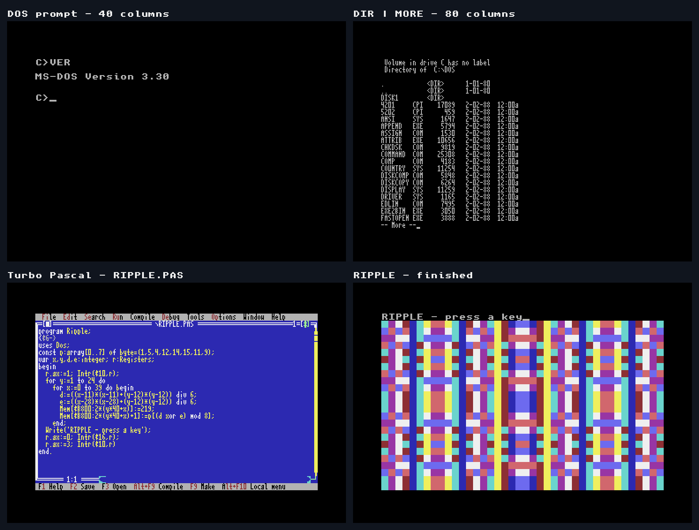

DOS64 Ultimate — an 8088 PC on the C64 Ultimate
DOS64 runs genuine MS-DOS 3.3 on an assembly-written 8088 interpreter, using the REU for PC memory and disk storage. It targets the original IBM PC/XT instruction set and 640 KiB of conventional memory. Minimum REU capacity is 4 MiB; the demonstrated machine runs at PAL, Manual 64 MHz.
Development preview, not V1. DOS, 40/80-column text, GW-BASIC and Turbo Pascal work in physical tests. Native 2 MiB installation passed; native 20 MiB installation currently times out. Configuration and floppy swap/Save/Finish still need complete physical qualification. Read current status and limitations before installing.

The four panels are real Ultimate video captures, composed without changing their screen contents. The two lower panels show the original Turbo Pascal IDE and the completed RIPPLE program. Individual screenshots.
Get started
- Install the prebuilt development package.
- Build from source and run tests.
- Download the development ZIP.
- Download the example-app disk image.
- Examples and source.
- Current status, V1 acceptance checklist, technical documentation.
DOS images, GW-BASIC, Turbo Pascal and other third-party applications are not included. Obtain the three original 360 KiB DOS 3.3 images, including GW-BASIC 3.2, from the Internet Archive item supplied for this project. Turbo Pascal must be obtained separately. The example image contains only our programs, their source and a readme; it is not bootable.
Display and storage
40-column text uses one 8×8 C64 cell per character. 80-column text packs two 4×8 characters into that cell, so adjacent characters share a colour pair. CGA modes 4/5/6 have deterministic C64 reductions; EGA/VGA and 16-colour CGA graphics are not implemented.
A/B are independent raw floppy images held in REU. DOS writes change that session copy; use the native disk menu to Save. C uses a file-backed cache with 32-bit offsets. Clean close/reopen and cold persistence have physical development-fixture evidence, including a 20 MiB C drive. This does not mean the native 20 MiB installer works. Always finish guest applications, return to DOS and use native Finish before ending a session.
Development
The target is 6502/6510 assembly built with ca65/ld65; native SETUP/CONFIG also use cc65 C. Host Zig 0.16.0 assertions execute the linked code through bundled Peddle. Python builds, packaging and disk tools are included. ZeroPage is a testing reference, not the compiler for this emulator. Host tests, reference DOSBox runs and physical tests have distinct scopes.
The latest picture demonstration compiles an 18-line Pascal program on the real Ultimate and runs its EXE through DOS. All source lines, all 1,000 guest character/attribute cells, and all six captured frames' native bitmap, colour matrix and active video pixels were checked. Further performance work is deferred until after V1. Historical measured kernels reached roughly 2.65%–3.96% of a modeled 4 MHz 8088 reference; these are not current whole-DOS measurements.
Working notes, logs, private device state, generated builds and vendor disk images remain local and ignored. Publication audit and reproducibility.